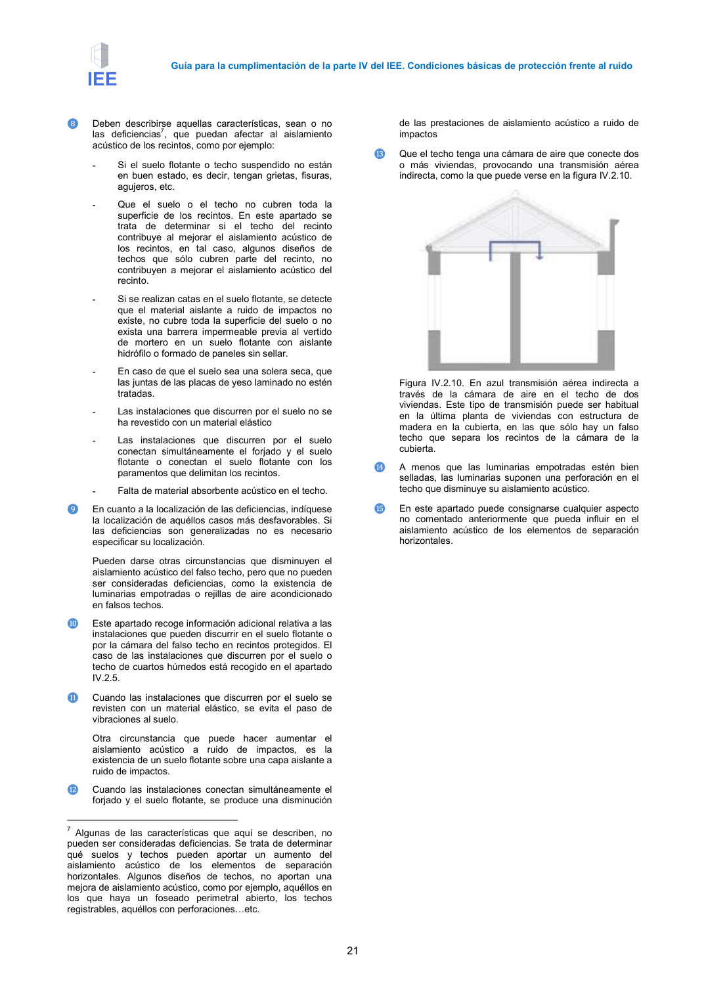

GUIA · Página 21 · versión 2016-11-01
SHA256: 813669d3066c0ff79457d57b80b0512a4fbb248bc5db1f7baf473c369a064738 · página física 21 de 65 · métodos de encabezado
solo si están cotejados.
Formatos: Markdown · JSON de bloques · PDF p. 21 · imagen PNG
Guía para la cumplimentación de la parte IV del IEE. Condiciones básicas de protección frente al ruido
21
❽
Deben describirse aquellas características, sean o no
las deficiencias7, que puedan afectar al aislamiento
acústico de los recintos, como por ejemplo:
-
Si el suelo flotante o techo suspendido no están
en buen estado, es decir, tengan grietas, fisuras,
agujeros, etc.
-
Que el suelo o el techo no cubren toda la
superficie de los recintos. En este apartado se
trata de determinar si el techo del recinto
contribuye al mejorar el aislamiento acústico de
los recintos, en tal caso, algunos diseños de
techos que sólo cubren parte del recinto, no
contribuyen a mejorar el aislamiento acústico del
recinto.
-
Si se realizan catas en el suelo flotante, se detecte
que el material aislante a ruido de impactos no
existe, no cubre toda la superficie del suelo o no
exista una barrera impermeable previa al vertido
de mortero en un suelo flotante con aislante
hidrófilo o formado de paneles sin sellar.
-
En caso de que el suelo sea una solera seca, que
las juntas de las placas de yeso laminado no estén
tratadas.
-
Las instalaciones que discurren por el suelo no se
ha revestido con un material elástico
-
Las instalaciones que discurren por el suelo
conectan simultáneamente el forjado y el suelo
flotante o conectan el suelo flotante con los
paramentos que delimitan los recintos.
-
Falta de material absorbente acústico en el techo.
❾
En cuanto a la localización de las deficiencias, indíquese
la localización de aquéllos casos más desfavorables. Si
las deficiencias son generalizadas no es necesario
especificar su localización.
Pueden darse otras circunstancias que disminuyen el
aislamiento acústico del falso techo, pero que no pueden
ser consideradas deficiencias, como la existencia de
luminarias empotradas o rejillas de aire acondicionado
en falsos techos.
❿
Este apartado recoge información adicional relativa a las
instalaciones que pueden discurrir en el suelo flotante o
por la cámara del falso techo en recintos protegidos. El
caso de las instalaciones que discurren por el suelo o
techo de cuartos húmedos está recogido en el apartado
IV.2.5.
⓫
Cuando las instalaciones que discurren por el suelo se
revisten con un material elástico, se evita el paso de
vibraciones al suelo.
Otra circunstancia que puede hacer aumentar el
aislamiento acústico a ruido de impactos, es la
existencia de un suelo flotante sobre una capa aislante a
ruido de impactos.
⓬
Cuando las instalaciones conectan simultáneamente el
forjado y el suelo flotante, se produce una disminución
7 Algunas de las características que aquí se describen, no
pueden ser consideradas deficiencias. Se trata de determinar
qué suelos y techos pueden aportar un aumento del
aislamiento acústico de los elementos de separación
horizontales. Algunos diseños de techos, no aportan una
mejora de aislamiento acústico, como por ejemplo, aquéllos en
los que haya un foseado perimetral abierto, los techos
registrables, aquéllos con perforaciones=etc.
de las prestaciones de aislamiento acústico a ruido de
impactos
⓭
Que el techo tenga una cámara de aire que conecte dos
o más viviendas, provocando una transmisión aérea
indirecta, como la que puede verse en la figura IV.2.10.
Figura IV.2.10. En azul transmisión aérea indirecta a
través de la cámara de aire en el techo de dos
viviendas. Este tipo de transmisión puede ser habitual
en la última planta de viviendas con estructura de
madera en la cubierta, en las que sólo hay un falso
techo que separa los recintos de la cámara de la
cubierta.
⓮
A menos que las luminarias empotradas estén bien
selladas, las luminarias suponen una perforación en el
techo que disminuye su aislamiento acústico.
⓯
En este apartado puede consignarse cualquier aspecto
no comentado anteriormente que pueda influir en el
aislamiento acústico de los elementos de separación
horizontales.
